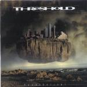

| Artist: | Threshold |
| Title: | Hypothetical |
| Label: | InsideOutMusic IOMCD 073 |
| Length(s): | 56 minutes |
| Year(s) of release: | 2000 |
| Month of review: | [04/2001] |
| 2) | Turn On Tune In | 6.12 |
| 3) | The Ravages Of Time | 10.19 |
| 5) | Oceanbound | 6.37 |
| 7) | Keep My Head | 4.01 |
| 8) | Narcissus | 11.14 |
Turn On Tune In is a more driven track with driving rhythm guitars and meandering organ playing. This track is rather fast as well.
The Ravages Of Time shows Threshold in top form. Heavy pounding drums, going against the grain most of the time, dazzling keyboard riffs, slightly Arabic lines on the guitar and the telling vocals of McDermott. What especially strikes me so far are the good vocal melodies. In this track, Mac sings in a slightly mysterious, twisted fashion.
Sheltering Sky opens mysteriously, somberly with piano and acoustic guitar, a low slow bass and spooky keyboards in the back. The chorus is a great one, very memorable and very good as well.
Oceanbound is to me a rather wild track, in a very good way. The driving rhythm guitar returns in Long Way Home, with some great vocal melodies again (a bit in the style of Kansas, but with a firm hardrock basis).
Keep My Head is a ballad track. For some reason I am reminded of Robbie Williams here. A nice track, and not too sweet.
The final track is the epic of the album. Narcissus is at first a driving piece of rock the way we are by now used to. The chorus is repeated a bit too often, but we are saved by the vocoded part in the middle against a backdrop of swirling keyboards. Then the first part of the song returns.